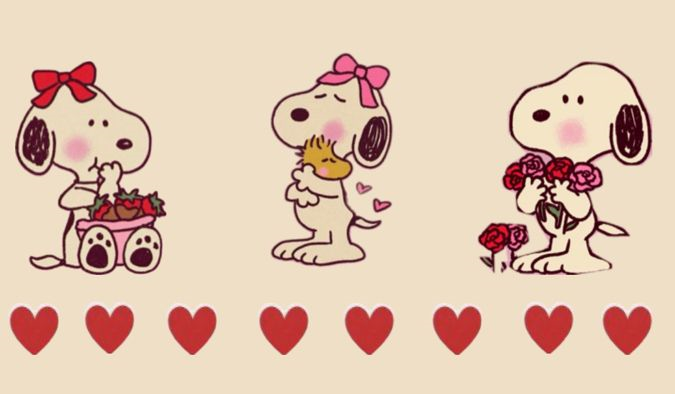

Tap to open hihi 💌

Heyy... I don't know where to start. hmm. maybe by saying that I hope you appreciate what I had created here. I want to say my message this way.
from the start, it all started when we met at the sneak cafe. The first time I saw you, I was so attracted to you to the point that I couldn't look away. You're so pretty and your aura makes me want to talk to you and to know you. But I was too shy to make a move.. so that leads me to just saying to myself that I will just admire you.
Days went by and I didn't expect to actually get the chance to talk to you and to get to know you, I know for a fact that me, myself, kino, was so happy that time. Because I actually have no hope that I will get the chance to talk to you, cuz that time you were like a super popular ferson and yes, tomboi ka, lol.
I tried my luck by asking you if I can court you and I didn't expect you to agree because tomboi ka nga and all that type of shit na hindi makakatagos sa isang tomboi. In the beginning it's actually pretty going well, we're both happy and shocked at the same time because both of us didn't expect that the outcome would lead to that situation. But of course not all happy situations can stay that kind of situation. We had to split up because your side doesn't want you to have a partner that is a boy. Honestly, that news broke me so much that all I can do is accept that it has just happened.
But of course I didn't give up that easily because I want to prove myself that I am a worthy person for you. I tried my luck again and after that it actually went great, memories are starting to build, connection is developing, and the love from both of us is rising.
I want to say this here, specifically on this part. Throughout the year, I can say that we built a strong relationship. Why? Because sa dami-dami na natin pinagdaanan na problems, situation, decisions, we still chose each other to fix it. That's why we are still together. I just wanted to say that I hope next time we get into a fight, let's lower our pride and choose to talk about it and not avoid each other. You are the one that I'm rooting for so don't let me down, don't pull away if I open up my feelings to you, I need you, and that's the only way you can comfort me is to listen to me and understand me. Of course, I will do the same. Because we are partners, we are both running this relationship.. with no communication, the relationship will go down to the ground, ego will be high, pride will go high.
Maybe I should also open up here, just to grab the opportunity. To begin with, I do not really care if you want to go out with your friends, because I know how it feels to hangout with our friends. Let's be honest, we can't get all the happiness from each other, we have our own life, our own way to make ourselves happy. I'm not saying this to hurt you, but I'm saying this to make you aware. I trust you, even though the history of your friend group is not that good, I still trust you, I hope you won't ruin it. I want you to be happy, even without me physically. Because I'm going to be honest too, I get tired easily now, because of the stress and pressure from life and acads. I hope you understand me on this part, so bare with me on this one. I know you mentioned it that if I have an exception.. to answer that, yes, I have. But sometimes you are the reason too why I get tired, not tired like I want to break up, no, not that, tired from the situation because sometimes it is too much to handle and I can't handle it all. I can't handle our situation, my acads, or my personal life. Therefore, I rather choose to take a break for a moment than say things that might get us into separation. For your information, I will not invalid your feelings if ever you would like to open up.. but if it is too much for me to handle, please, let me take a break for a while and let me think it fully.
Going back to the message, I'm still lucky to have someone like you. Throughout the year, you were like a 2 in 1 for me, a partner and a mother HAHAHAHAHA no offense.. because you made me fulfill my joy and be there when I needed comfort, you guided me and helped me make decisions for my life. You make my day when you are happy.. well of course, you are also ruining my day if yours is. Enough of the bluffs. Neizha, love, te, beh, bes, my favorite human, thank you. Thank you for being supportive and loving me unconditionally. If I remember correctly, on our 3rd monthsary, you told me that the longest partner you had is 6 months, I told you that I can beat that number! I'm still here proving to you that I can do it, 1 year together was a blast. Our relationship is like a roller-coaster, sometimes it goes up, sometimes it goes down or sometimes it also loops. If I were to describe our relationship, that's how I would describe it.
To wrap this message up, I just wanted to day that..
My favorite human, Happy Anniversary! 💓